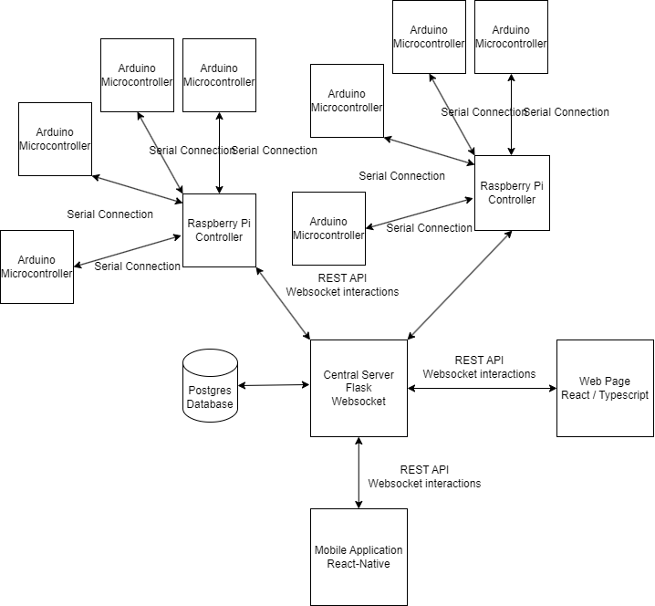

The Smart Home System is an IoT solution that enables users to control
and monitor home devices through a centralized web interface. Built with
React.js for the frontend and Flask/FastAPI for the backend, the system
manages real-time device communication via WebSockets and RESTful APIs.
User data, device configurations, and logs are stored in a PostgreSQL
database, while Raspberry Pi controllers act as intermediaries,
executing local automation and connecting to Arduino microcontrollers
that interface with sensors and actuators. This architecture ensures a
responsive, scalable, and user-friendly smart home management
experience.
